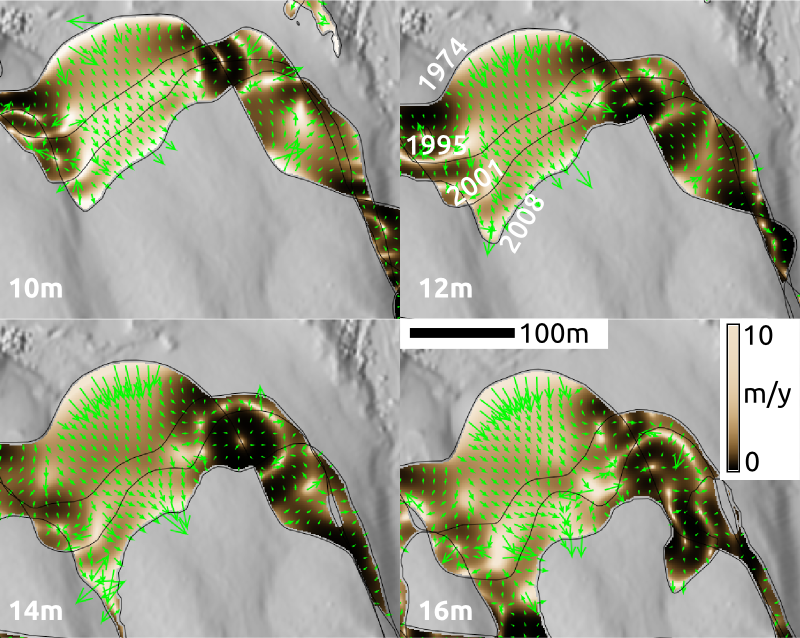

Simple experiment
Series of DEMs for tests created using Tangible Landscape


Inspired by Tokyo Wind Speed application by Cameron Beccario.
Derived from air.js source code.
Uses HTML, CSS, JavaScript and D3.js library.
Gradient field of horizontal migration at z=10m for Jockey's Ridge dune for years 1974 - 2008

Windward side of Jockey's Ridge dune at different elevations
